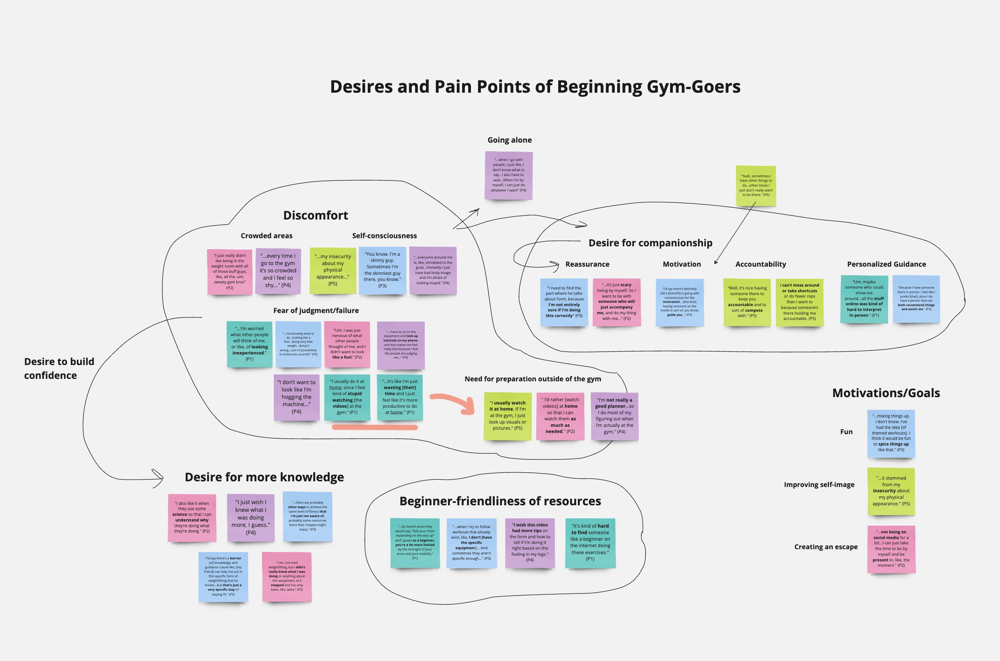

Course
SI 422: Needs Assessment and Usability Evaluation
Role
UX Designer, UX Researcher (Solo)
Timeline
March 2024 - April 2024 (3 weeks)
Tools
Figma, Adobe Illustrator, Procreate
The Problem
“Gymtimidation” proves a significant barrier of entry for countless first-timers looking to get into fitness. On top of body image, societal expectationsa lot of them are forceed to practice at home before going to the gymdepend on a friend. No tonly is there a pressure to perform, beginners feel
The Solution
FitDict is a mobile app that is what the name implies: it's a virtual fitness dictionary meant to jfijdk
Research Objective
I came into this project with the intent of creating some kind of digital application to improve the experience of novice gym-goers. I admittedly had my own preconceptions about what a novice at the gym needed and wanted; after all, I had been one myself. To mitigate this bias, I set out on a comprehensive investigation of the thoughts, feelings, and behaviors that novices exhibit at the gym. These were the main questions I asked through the entire research process:
- What pains and pleasures do novice gym-goers experience, both at the gym and at home?
- How do beginners go about bridging the gaps in their fitness knowledge? What resources do they use?
- What are beginners' attitudes towards using digital applications at or around the gym?
Interviews & Affinity Mapping
I conducted a handful of user interviews over the course of a week and grouped my findings into an affinity map.
I interviewed five students over the course of a seek, asking them questions regarding their pleasures, worries, thoughts, and preference for resources at the gym. All five of them had two months of fitness experience or less. By the end of the process, I found that users:
- Some participants expressed a desire for more heavy-handed guidance, in the form of existing online workouts, friends to keep them accountable, or personalized gym advice.
- Some users favored a more hands-free approach, preferring to be left to figure things out on their own under loose guidance.
- Some users were concerned with feelings of worry and insecurity at the gym, which defined their average gym experience for the most part.
- Some users expressed a desire for companionship at the gym, while others preferred to be alone.
- Low self-image was a motivator for all participants.

Ethics and bias